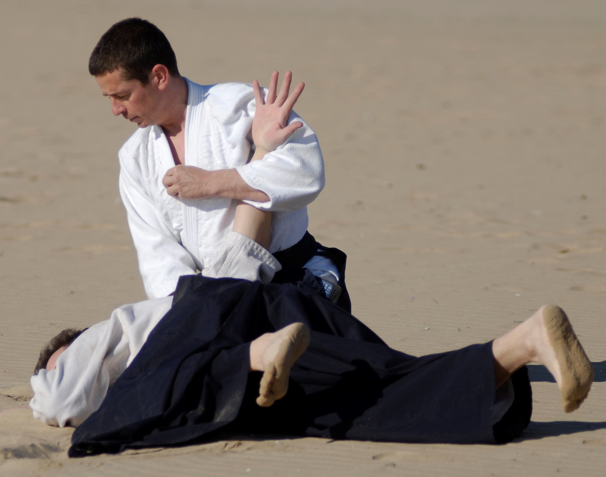
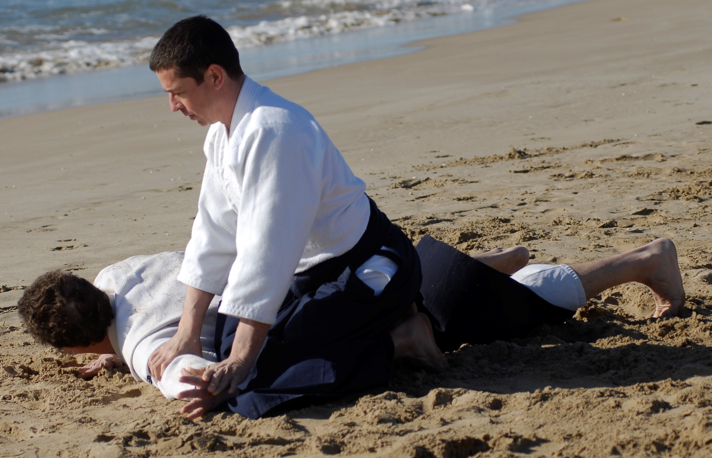
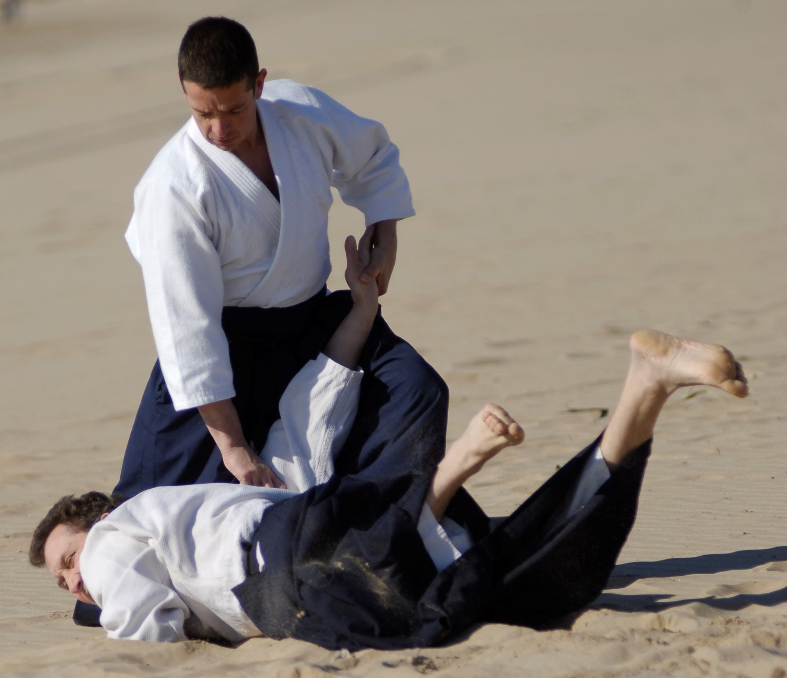
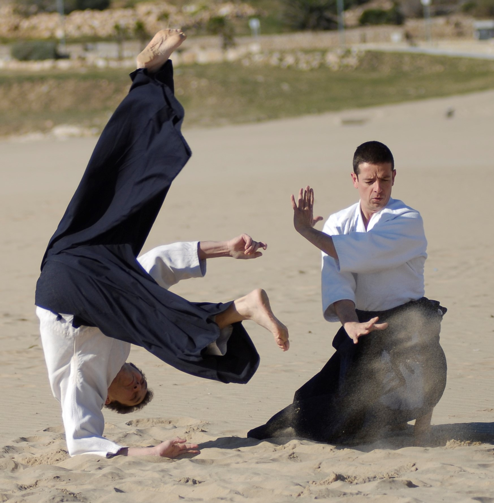
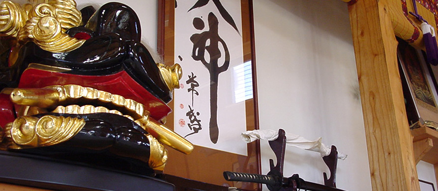
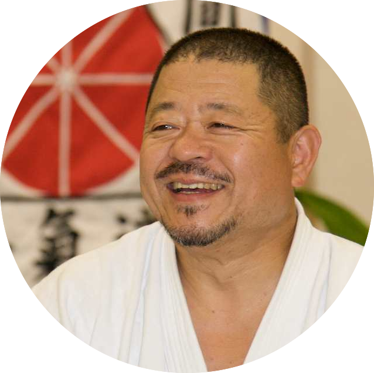
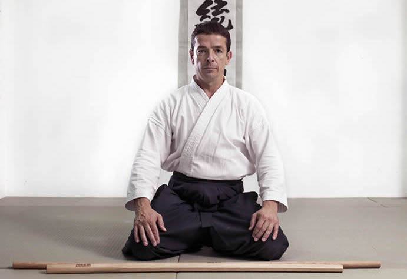

L’ASSOCIACIÓ CATALANA d’AIKIDO DENTO IWAMA RYU (ACADIR), es crea l’any 2007 amb la finalitat de promoure l’ensenyança, la pràctica, la cultura i difondre els principis de l’escola d’Aikido Dento Iwama, sent fidel als fonaments que va establir el seu fundador O’Sensei Morihei Ueshiba.
Es reconeix a Morihiro Saito Sensei com a fundador de l’escola d’Aikido d’Iwama i a Hitohiro Saito Sensei com a fundador de l’escola d’Aikido Dento Iwama Ryu.
Com Associació reconeguda a la comarca de Tarragona, hem creat un conveni de col·laboració amb la Universitat Rovira i Virgili per apropar l'Aikido als joves del territori.
Avantatges pels estudiants de la URV.
Saber-ne més.
Escola
AIKIDO JUVENIL

L’ENSENYAMENT
APRENENTATGE A L’ESCOLA D’AIKIDO
L'Aikido és una disciplina d'origen japonès enfocada a l’autodefensa que consisteix a controlar o projectar l’adversari redirigint la seva pròpia força no violentament. Per aconseguir-ho, el practicant es cohesiona amb el seu oponent, s’uneix als seus moviments harmoniosament i aplica les tècniques adequades per neutralitzar-lo.
ACTUALITAT I FUTUR
L'Escola s’inclou dins la secció d’Aikido del Club Natació Tàrraco.
La finalitat de l’Escola és arribar a ser una escola base de referència i per aconseguir-ho compta amb un equip tècnic qualificat al capdavant, amb el suport de l'Associació Catalana d’Aikido Dento Iwama Ryu (ACADIR) i amb la cobertura total del club a nivell legal, de gestió i d’instal·lacions.
FUNCIONAMENT I OBJECTIUS
Per estructurar l’itinerari formatiu a desenvolupar, l’Escola segueix una planificació i una metodologia per tal que adquireixin progressivament les habilitats i competències necessàries i així arribar a dominar els fonaments de l'Aikido. Per a cada nivell hi ha un programa predeterminat que han de superar amb una avaluació i així avançar de grau.
Malgrat això i el caràcter marcial de la nostra disciplina, el nostre model no és competitiu. Les activitats són col·laboratives i participatives, fomentant la igualtat de gènere i el caràcter recreatiu.
Fem prevaldre l’actuació motriu i no el rendiment. Busquem fomentar els àmbits cognitiu, cinestèsic, inter- i intrapersonals, l’esperit de cooperació, l'autoconfiança i el treball en equip.

L’alumnat practica per plaer i gaudir, no està limitat per l’edat (dividits en grups), gènere (grups amb molta paritat) o tecnicitat (nivell tècnic molt parell). Tothom és protagonista, i busquem més la companyonia que la competició o la victòria.
Des del punt de vista fisioterapèutic, es busca realitzar exercicis adequats a les possibilitats motrius del jovent perquè es pugui formar de manera saludable, equilibrada, evitant el rendiment motriu prematur.
L'Aikido és un art marcial d'autodefensa d'origen japonès consistent en neutralitzar amb el mínim de violència possible, l'acció agressiva de l'oponent mitjançant tècniques d'immobilització i projecció. És un magnífica síntesi de les arts marcials tradicionals japoneses, perquè a més de ser un sistema eficaç de defensa personal és una disciplina per al desenvolupament personal, tant físic com espiritual.
És un art marcial que va dirigit a tot tipus de persones, indistintament de la seva condició física, edat o sexe. De la seva pràctica es desprenen valors morals com ara el respecte, l’esperit de la no violència, la bondat, el coratje, la modèstia, la humilitat, l’educació i l’autocontrol, valors que carateritzen el Bushido (codi d’honor tradicional).
BENEFICIS EN L’ETAPA DE FORMACIÓ
¿Sabies que l'Aikido ens aporta un conjunt de tècniques ideals per creixer a nivell personal?
L’Escola té com a objectiu ajudar a millorar a l’alumnat principalment en les intel·ligències cinètico-corporal, tant a nivell tècnic i físic, com intrapersonalment (conèixer-se a un mateix) i interpersonalment (saber conviure en el si del grup d’entrenament). Per aconseguir aquesta millora educativa, els entrenaments estan pautats en diferents nivells o programes.
Des del punt de vista del model participatiu, preval l’actuació motriu i no el rendiment. Busca fomentar els àmbits cognitius, les relacions interpersonals, l’esperit de cooperació en grup i la sociabilitat.
La pràctica continuada de l’Aikido permet que el jovent es beneficiï d’un seguit d’habilitats que permetran millorar les seves competències en els àmbits estudiantil, esportiu i personals.
Permet tonificar el físic i reforçar la coordinació i la flexibilitat. S’incrementa també l'agilitat, l'equilibri, la centralitat i la lateralitat.
Millora l’autoconfiança, l’autoestima i l’autodisciplina necessàries per assolir els reptes de la vida, com ara els estudis, els esports o les relacions socials. Ajuda a l’alumnat, principalment noies, que per por o vergonya a destacar intenten passar desapercebudes.

Estimula l'autosuperació, ja que les classes estan pensades per anar avançant tant tècnicament com conceptualment al llarg dels cursos.
Cultiva la constància, la perseverança i l’esforç, tots necessaris per afrontar reptes a mig i llarg termini i pretén minimitzar dèficits d’atenció, hiperactivitat i la falta de paciència, sobredimensionades per l’ús excessiu de les noves tecnologies. Afavoreix la concentració i la presa de decisions de manera centrada, templada i raonada.
Promou la cooperació, el treball en equip i la no competitivitat, recomanables tant a l’escola com a fora, afavorint la igualtat de gènere ja que durant la pràctica aprofites l’energia del company fent ús del sentit comú.

Valoritza el respecte al Mestre, als companys i companyes, a un mateix i a la societat. Evita caure en diverses tipologies conductuals, com poden ser:
Assetjament escolar. El conegut «bullying» és molt freqüent a les escoles.
Assetjament sexual o relacionat amb el gènere. De dramàtica actualitat, noves formes d’assetjament han sorgit també amb la xarxa (ciberassetjament o grooming).
Assetjament digital, relacionat amb l’ús inadequat de les noves tecnologies.
Filosofia

Som una escola fidel a l'Aikido d' Iwama Shinshin Aiki Shurenkai que està al dia de les ensenyances del mestre Hitohiro Saito, fill de Morihito Saito i alumne de O Sensei Morihei Ueshiba.
Amb l'Aikido d'Iwama
preservem i compartim la gran influència del meu pare Morihiro, mentre seguim fidels a l'herència tècnica i espiritual deixades pel Fundador Morihei Ueshiba.
Contínuament, intentem millorar a través de la intensiva i sistemàtica tècnica de kihon, i creiem que cada entrenament és una oportunitat única per sentir-se més propers al Fundador. Primerament aplico aquestes tècniques amb mi mateix.
Iwama Shinshin Aiki Shurenkai. Hitohiro Saito

Mestre

El Mestre Josep Roldán, amb més de de 40 anys d'experiència en les Arts Marcials Tradicionals, s'ha format entre Espanya i Japó.
L'estudi constant, la seva inquietud i la pràctica estricta de tots aquests anys per diverses disciplines, l'ha conduït a aprofundir en l'estudi de l'Aikido.
L'any 2005 durant un seminari a Itàlia coneix al Mestre i Soke Hitohiro Saito, sorprès per la metodologia i la contundència de les seves tècniques, decideix ingressar a l'escola Shinshin Aikisurenkai del Japó.
Ha assistit i segueix assistint a Seminaris Internacionals d’Aikido per tot el món. Viatja regularment al Japó com a uchi deshi (alumne intern) per perfeccionar el Budo.
Ha impartit classes d'Aikido a diferents centres de la província de Tarragona.
És el responsable i director tècnic a Catalunya de l'Associació Catalana d'Aikido Dento Iwama Ryu (ACADIR).
És Mestre i 4t Dan d'Aikido, per l'escola Shinshin Aikiahurenkai del Japó.
Mestre Nacional i 4t Dan d'Aikido per la Federació Espanyola (FEAMCDA).
Ostenta el 3r Dan de Karate-do per les Federacions Espanyola i Catalana, (FEK-FCK).
També impartim classes al dojo Gembu-Kai Club Esportiu, a Bonavista.
El nostre dojo està situat al Club Natació Tarraco, al centre de Tarragona.
Gràcies pel seu missatge. Ens posarem en contacte amb vostè directament al més aviat possible.
Condicions de Privacitat
Hugo:
Aquest lloc web ha estat implementat amb la tecnologia d'Hugo, i pot consultar totes les condicions d'ús de pólitica y de privacitat a la pàgina web: Hugo Terms.
Google Analytics:
Aquest lloc web empra cookies de Google per analitzar el tràfic de la web. Google rep informació sobre el seu ús en aquest lloc web. Si utilitzes aquesta web, sobreentendrem que ha llegit aquesta y accepta l'ús de cookies. Si vol saber més informació sobre
l'ús de cookies, la trobarà en l'enllaç proporcionat.
Per més informació sobre les pràctiques de privacitat de Google, si us plau visita la pàgina web: Google Privacy Terms.
Formspreee:
Aquest lloc web utilitza un formulari gestionat per la plataforma externa FormSpree. Si vol enviar cap consulta per mitjà del formulari desde la nostra pàgina de contacte sobreentendrem que ha llegit i acceptat les Condicions d'ús i les polítiques de privacitat d'aquesta plataforma.